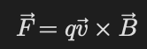
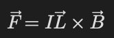

Manyetik Alanlar
Temel Mantık
Manyetik alan hareket eden yükler ve akımlar tarafından oluşturulur.
Manyetik alan:
- hareket eden yüklere
- akım taşıyan tellere
kuvvet uygulayabilir.
Lorentz Kuvveti
Hareket eden yük üzerine etki eden kuvvet:

- q → yük
- v → hız
- B → manyetik alan
Kuvvetin Özellikleri
- Kuvvet hem v’ye hem B’ye diktir.
- Manyetik alan iş yapmaz.
- Yalnızca hareket eden yük etkilenir.
Akım Taşıyan Telde Kuvvet

- I → akım
- L → tel uzunluğu
Soru Çözme Taktiği
- Yük hareket ediyor mu kontrol et.
- Sağ el kuralını kullan.
- Kuvvetin yönünü dikkatli belirle.
- Gerekirse merkezcil kuvvet eşitlemesi yap.
- Akım yönü ile elektron yönünü karıştırma.
Sık Yapılan Hatalar
- Sağ el kuralını ters yapmak
- Negatif yük yönünü unutmak
- Manyetik alanın iş yaptığını sanmak
- v ile B paralelken kuvvet olacağını düşünmek
- Elektron yönü ile akım yönünü karıştırmak